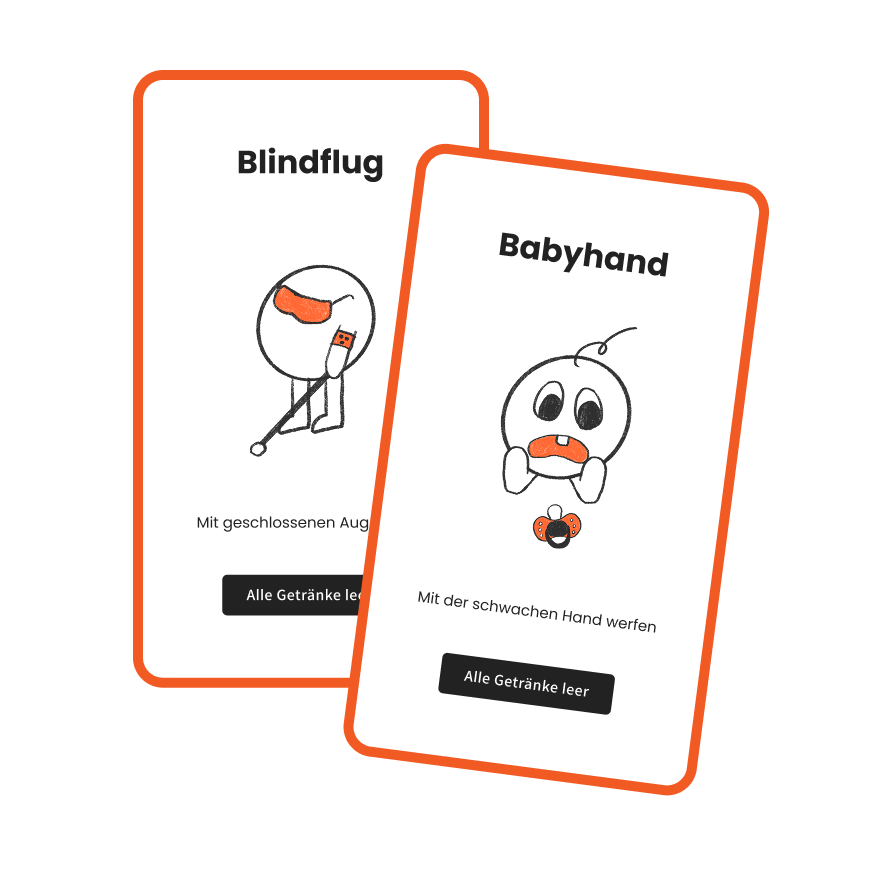

Flunk-E

Flunky Ball ist ein interaktives, sensorisches, digitales Trinkspiel, das ursprünglich als Abgabe für ein Modul, später noch für das European Media Art Festival (EMAF) 2025 entwickelt wurde. Ziel war es, das klassische Trinkspiel in eine digitale, spielerisch ausgelichenere Erfahrung zu überführen, die gute sowie schlechte Werfer*innen Flunky Ball fair spielen lässt. Die Umsetzung erfolgte als mobile App, die sich über Bluetooth BLE mit der umzuwerfenden Flasche und dem Ball verbindet und deren Sensorikdaten erhält.
| Meine Rolle | UX-Konzeption, Game Design, Prototyping, Copywriting, Coding |
| Technologien | Figma (Prototyping), Arduino IDE , ChatGPT (Hilfe bei Ideenfindung und Copywriting), Arduino Nano 33 BLE Sense Rev2 |
So sieht's aus
Hardware ExplorationDie Prototypen: 3D-gedruckte Kugel, Sensorik und die ikonische, widerstandsfähige Flasche schaffen eine greifbare Verbindung zwischen analogem Wurfspiel und digitalem Feedback.
Challenges
Ein zentrales Element von Flunk-E sind die integrierten Challenges. Nach jedem Punktgewinn muss das führende Team eine zufällige Challenge absolvieren. Diese Challenges sorgen nicht nur für zusätzlichen Spielspaß und Abwechslung, sondern gleichen auch das Spiel aus, wenn ein Team zu stark dominiert. So bleibt das Spiel spannend und motivierend für alle Beteiligten.